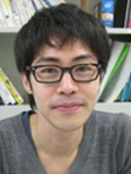

JST CREST 人間と情報環境の共生インタラクション基盤技術の創出と展開
「優しい介護」インタラクションの計算的・脳科学的解明

中澤 篤志
研究代表者 京都大学大学院情報学研究科 准教授 (現 岡山大学ヘルスシステム統合科学研究科 教授） 研究内容：「見つめる」スキルの定量化倉爪 亮
研究分担者(グループリーダー) 九州大学システム情報科学研究院 教授 研究内容：身体動作・話しかけるスキルの計測・定量化本田美和子
研究分担者(グループリーダー) 国立病院機構・東京医療センター 研究内容：優しい介護スキルの実践・効果検証佐藤弥
研究分担者(グループリーダー) 理化学研究所 ロボティクスプロジェクト 研究内容：スキル習得の脳科学的理解

石川 翔吾
研究分担者(グループリーダー) 静岡大学情報科学科 研究内容 ：優しい介護スキルの実践・効果検証